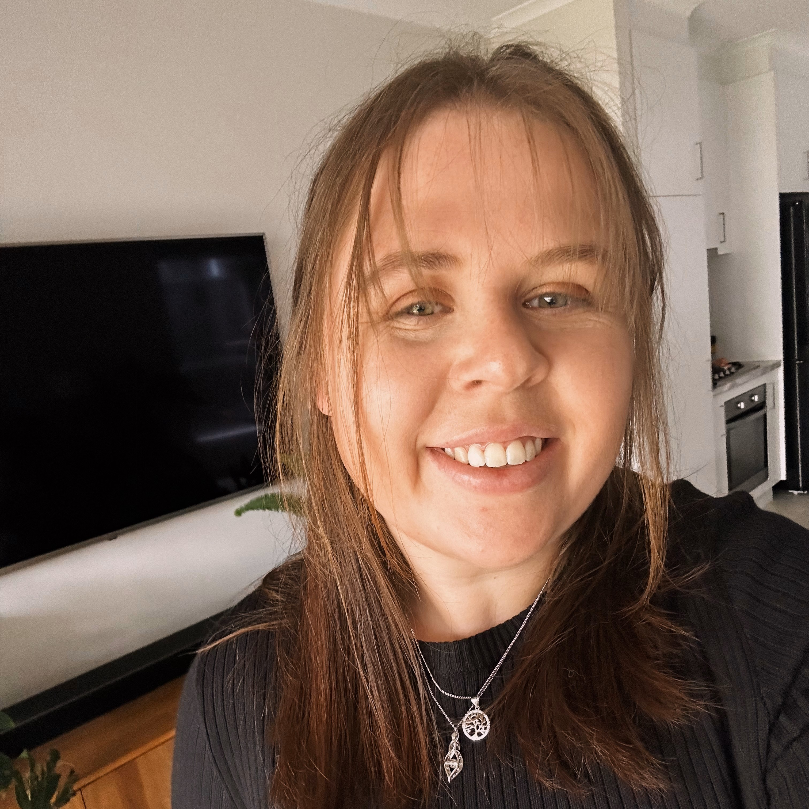

Hi, I'm Ashlyn!
Based in Adelaide, South Australia, I'm a budding web developer. With a background in copywriting and Digital Marketing, I'm looking to take my career to the next level by learning both front and back end web development.
In my free time, you can find me hanging with my cats, reading, sewing, knitting, crocheting or trying to figure out how to do several of these at once.
My Work
Contact Me
- Ashlyn McGarry
Adelaide, South Australia - Phone: 0430 737 338
- Email: ashlynjmcgarry@gmail.com
- GitHub